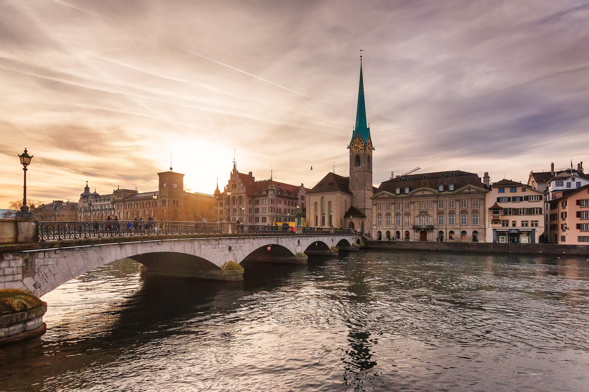
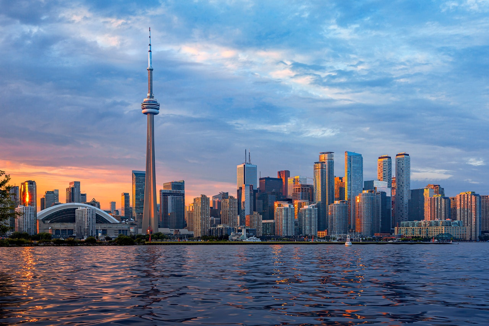

Cuando el Museo Nacional de Oslo se traslade a su nuevo edificio cerca del Ayuntamiento el año que viene, se convertirá en el mayor centro cultural de los países nórdicos. El museo podrá exponer 5 mil obras —el doble de las que podía exponer antes— en la nueva colección y contará con una nueva y enorme Sala de la Luz en la parte superior del edificio, que se dedicará a exposiciones rotativas de arte contemporáneo. La capital noruega también recibirá un nuevo y épico hotel llamado Sommero en la sede de la compañía eléctrica original de Oslo.
Charleston, Carolina del Sur
La Ciudad Santa pronto albergará el Museo Internacional Afroamericano, cuyo objetivo es abordar la historia de la esclavitud en Estados Unidos y explorar las conexiones de la diáspora africana. En particular, el Jardín Conmemorativo de los Ancestros Africanos ofrecerá un lugar para la contemplación tranquila en la costa original donde muchos africanos esclavizados pisaron por primera vez los Estados Unidos. La ciudad también va a recibir un hermoso hotel llamado The Pinch en dos edificios de la época victoriana.
Zúrich, Suiza

Los amantes del arte y el diseño tienen una nueva razón para visitar Zúrich en 2022. Una ampliación recientemente realizada por David Chipperfield ha convertido la Kunsthaus Zürich en el mayor museo de arte de Suiza. Conocido por su colección de obras impresionistas francesas, el museo está poniendo un mayor énfasis en el arte moderno y contemporáneo, con el nuevo edificio de Chipperfield centrado en el arte desde 1960 hasta el presente. También alberga una nueva tienda de diseño, un jardín y un bar.
Toronto, Canadá

La frontera entre Estados Unidos y Canadá se reabrió por fin este verano, lo que permite a los estadounidenses volver a visitar a nuestros vecinos del norte, y, el año que viene, Toronto tendrá aún más lugares interesantes donde alojarse. Está el recién inaugurado 1 Hotel Toronto, diseñado por el exalumno del AD100 Rockwell Group, además del primer Ace Hotel de Canadá, el W Toronto, y el renovado Park Hyatt Toronto.